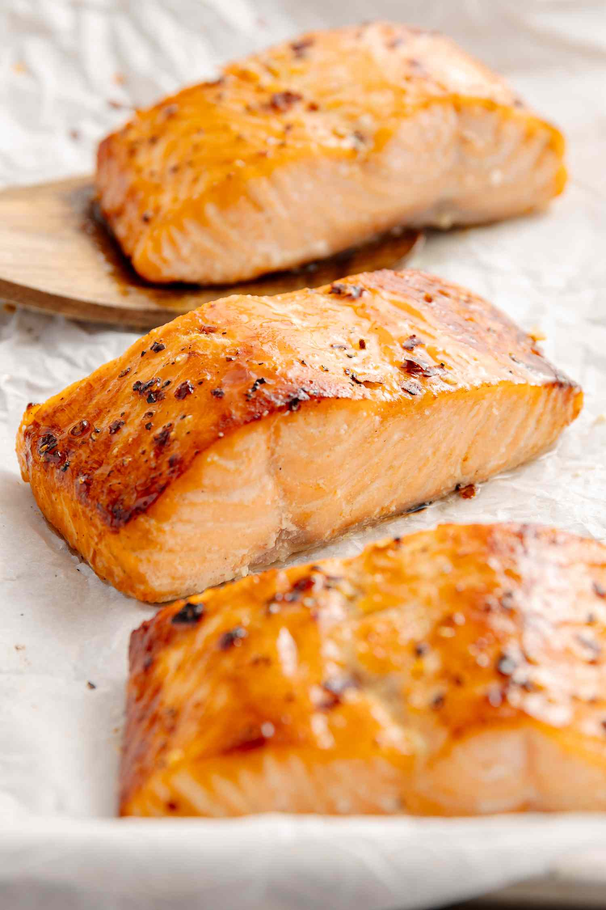

King of Salmon

Description
Prepare to make some bomb-ass salmon. This will be the "ultimate" salmon, no other salmon in the entire world shall
surpass the salmon you are about to make. It will be the King of salmon. Find out why it
will be the King of salmon below...
It will be the Kinf of Salmon because it shall, you don't need to know why. Don't ask questions.
Ingredients
- 2 tablespoons of light brown sugar
- 1/2 teaspoon paprika
- 1/2 teaspoon garlic powder
- 1/4 teaspoon cayeene pepper
- Kosher salt and freshly ground black pepper
- 1/4 cup of panko breadcrumbs
- 1/2 cup parsley leaves, chopped
- 2 tablespoons unsalted butter, melted
- 1 1/2 pounds skill-on salmon fillet, preferably center-cut
- 1 tablespoon Dijon
Steps
- Preheat the over to 425 degrees F.
- Mix the brown sugar, paprika, garlic powder, cayenne pepper, 1 teaspoon kosher salt and a generous amount of freshly ground black pepper in a small bowl.
- Place the salmon skin-side down on the prepared baking sheet and spreac the surface with Dijon.
- Press the brown sugar mixture all over the salmon then top with the breadcrumb mixture.
- Crimp all four sides of the foil to create a border around the salmon, this will help collect the juices so they don't spread and burn.
- Bake until the breadcrumbs are golden brown, and the salmon is firm and flakes easily when pressed, 15 to 18 minutes.
- Cut into four equal portions for serving